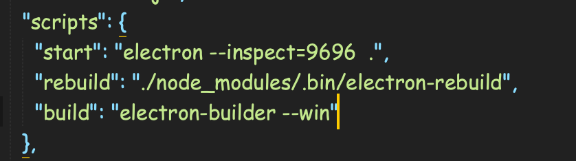
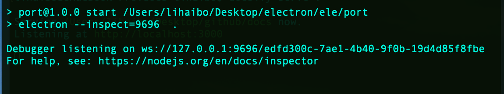
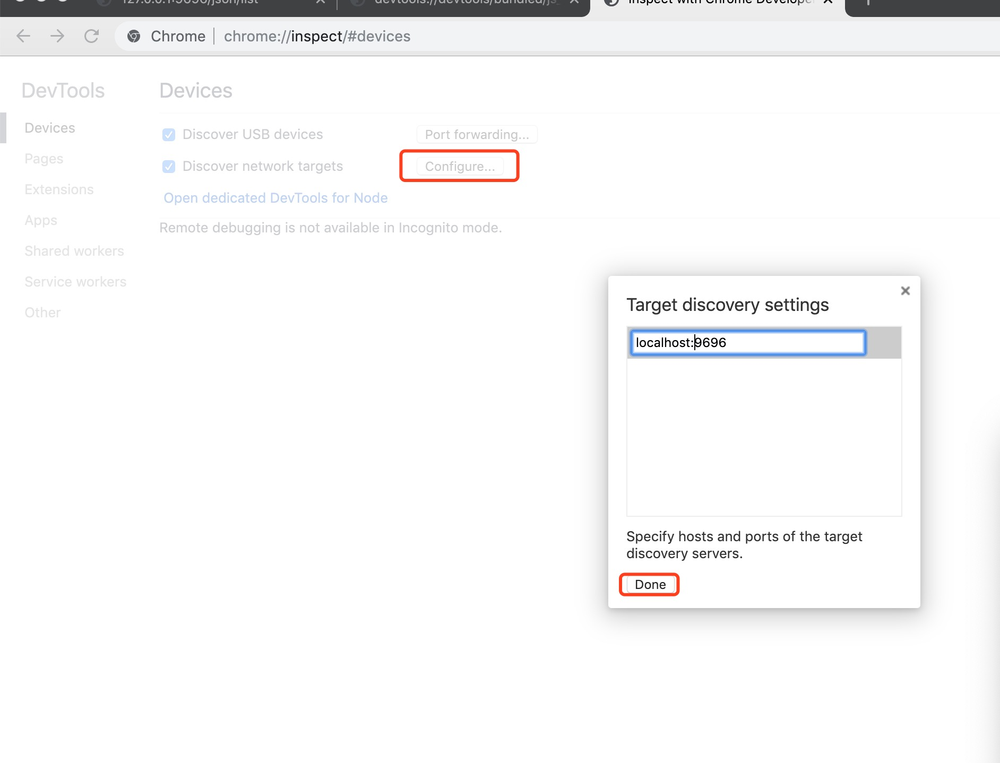
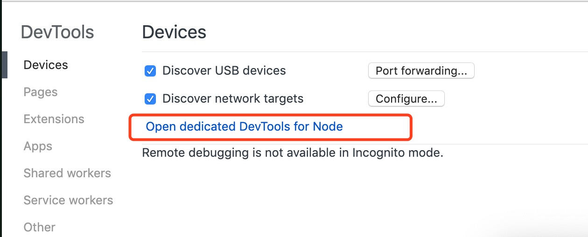
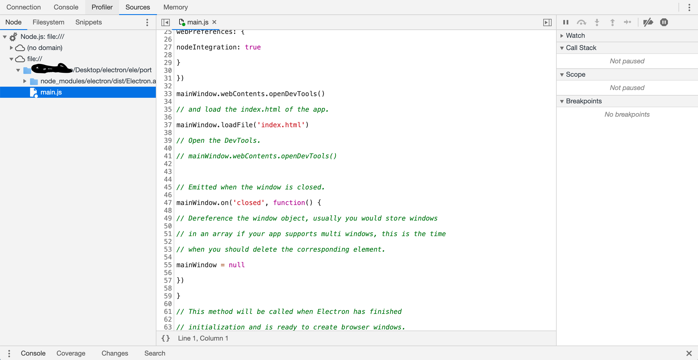
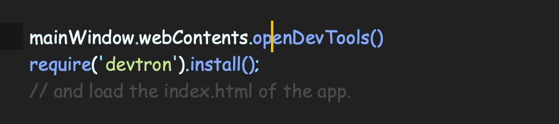
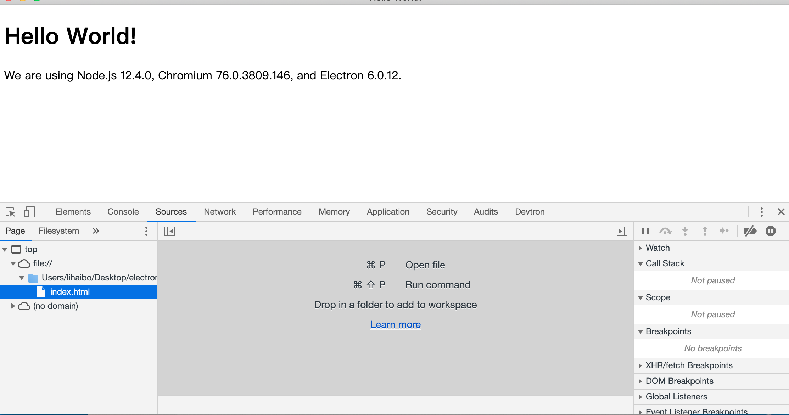
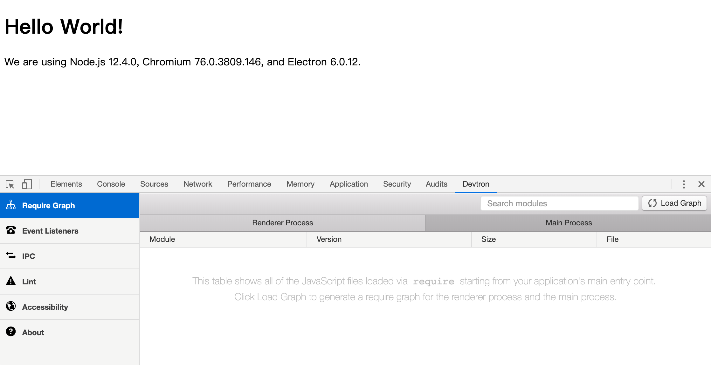
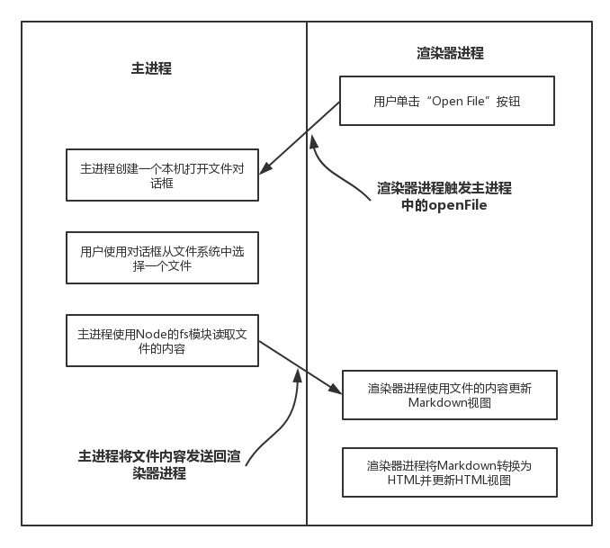
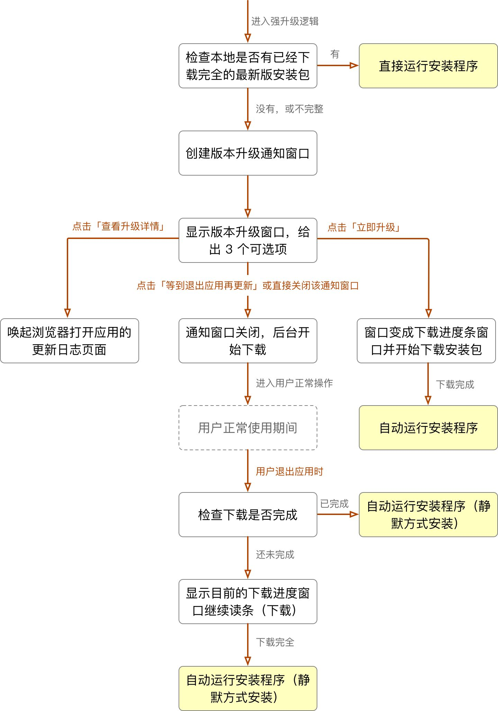

electron

Electron 是由 Github 开发,使用 JavaScript, HTML 和 CSS 构建跨平台的桌面应用,原理是 electron 通过将 chromium 和 node.js 合并到同一个运行时环境中，并将其打包为 Mac，Windows 和 Linux 系统下的应用来实现这一目的。
开始
# 克隆示例项目的仓库
$ git clone https://github.com/electron/electron-quick-start
# 进入这个仓库
$ cd electron-quick-start
# 安装依赖并运行
$ npm install && npm start
每次修改 mian.js 文件都需要自动重启，安装 nodemoon
npm install nodemoon --save-dev
在 package.json 中配置，然后启动"npm install start"
"start": "nodemoon --watch main.js --exec 'electrion .'",
调试
主进程调试
在启动 electron 中配置 "--inspect",启动 “npm start”
 
在 chrome 中打开“chrome://inspect/#devices” 配置

 
渲染进程
在 main.js 打开控制台“mainWindow.webContents.openDevTools()” 
渲染进程与主进程的通信调试，安装“devtron”  
进程

主进程- Main Process
- 可以使用和系统对接的 Electron API-创建菜单,上传文件等
- 创建渲染进程- Renderer Process
- 全面支持 Node.js
- 一个程序只有一个主进程，作为整个程序的入口点
渲染进程- Renderer Process
- 可以有多个,每个对应一个窗口
- 每个都是一个单独的进程
- 全面支持 Node.js 和 DOM API
- 可以使用一部分 Electron 提供的 API
主进程(ipcMain)与渲染进程通信(ipcRenderer)
//主进程
ipcMain.on('open-data', (event, data) => {
console.log(data);
event.sender.send('send-file');
});
//渲染进程
//发送消息
ipcRenderer.send('open-data');
//监听消息
ipcRenderer.on('send-file', (event, data) => {
console.log(data);
});
全局快捷键
globalshortcut.register('ctrl+e',()=>{
//do something
})
网络监控
window.addEventListener('online',()=>{
console.log('在线')
})
window.addEventListener('offline',()=>{
console.log('断网了')
})
常用模块
electron-store:本地持久化
const Store = require('electron-store');
const store = new Store();
store.set('unicorn', '🐎');
console.log(store.get('unicorn')); //🐎
store.set('foo.bar', true);
console.log(store.get('foo')); //=> {bar: true}
store.delete('unicorn');
console.log(store.get('unicorn')); //=> undefined
electron-is-dev 检查当前(生产 开发)环境
const isDev = require('electron-is-dev');
if (isDev) {
console.log('Running in development');
} else {
console.log('Running in production');
}
electron-log 日志
const log = require('electron-log');
log.info('Hello, log');
log.warn('Some problem appears');
electron-log支持的日志级别有：error, warn, info, verbose, debug, silly
electron-builder 打包
"build": {
"productName":"xxxx",//项目名 这也是生成的exe文件的前缀名
"appId": "com.xxx.xxxxx",//包名
"copyright":"xxxx",//版权 信息
"compression": "store", // "store" | "normal"| "maximum" 打包压缩情况(store 相对较快)，store 39749kb, maximum 39186kb
"directories": { // 输出文件夹
"output": "build"
},
"publish": [
{
"provider": "generic",
"url": "http://127.0.0.1:3000/xxx/"
}
],
"extraResources": { // 拷贝dll等静态文件到指定位置
"from": "./app-update.yml",
"to": "./b.txt"
},
"publish": [
{
"provider": "generic", // 服务器提供商 也可以是GitHub等等
"url": "http://xxxxx/" // 服务器地址
}
],
"asar": true,//asar打包
"files": [
"**/*",
"!docs${/*}",
"!node_modules/@paulcbetts/cld/deps/cld${/*}"
],
"mac": {
"category": "public.app-category.productivity",
"artifactName": "${productName}-${version}-${arch}.${ext}"
},
"linux": {
"category": "Chat;GNOME;GTK;Network;InstantMessaging",
"packageCategory": "GNOME;GTK;Network;InstantMessaging",
"description": "etrial Desktop Client for Linux",
"target": [
"deb",
"zip",
"AppImage",
"snap"
],
"maintainer": "Akash Nimare <akash@etrial.com>",
"artifactName": "${productName}-${version}-${arch}.${ext}"
},
"deb": {
"synopsis": "etrial Desktop App",
"afterInstall": "./scripts/debian-add-repo.sh",
"afterRemove": "./scripts/debian-uninstaller.sh"
},
"snap": {
"synopsis": "etrial Desktop App"
},
"dmg": {
"background": "hardware/build/appdmg.png",
"icon": "hardware/build/icon.icns", //路径
"iconSize": 100,
"contents": [
{
"x": 380,
"y": 280,
"type": "link",
"path": "/Applications"
},
{
"x": 110,
"y": 280,
"type": "file"
}
],
"window": {
"width": 500,
"height": 500
}
},
"win": {
"target": [
{
"target": "nsis-web", //我们要的目标安装包
"arch": [//// 这个意思是打出来32 bit + 64 bit的包，但是要注意：这样打包出来的安装包体积比较大，所以建议直接打32的安装包
"x64",
"ia32"
]
}
],
"icon": "hardware/build/icon.ico", //图标路径
"artifactName": "${productName}-Web-Setup-${version}.${ext}",
"publisherName": "xxxx.Labs, Inc."
},
"nsis": {
"perMachine": false,//是否开启安装时权限限制（此电脑或当前用户）
"oneClick": false, // 是否一键安装
"allowElevation": true, // 允许请求提升。 如果为false，则用户必须使用提升的权限重新启动安装程序。
"allowToChangeInstallationDirectory": true, // 允许修改安装目录
"installerIcon": "./build/icons/aaa.ico",// 安装图标
"uninstallerIcon": "./build/icons/bbb.ico",//卸载图标
"installerHeaderIcon": "./build/icons/aaa.ico", // 安装时头部图标
"createDesktopShortcut": true, // 创建桌面图标
"createStartMenuShortcut": true,// 创建开始菜单图标
"shortcutName": "xxxx", // 图标名称
"include": "build/script/installer.nsh", // 包含的自定义nsis脚本 这个对于构建需求严格得安装过程相当有用。
"script" : "build/script/installer.nsh", // NSIS脚本的路径，用于自定义安装程序。 默认为build / installer.nsi
}
}
electron-updater （--save）自动更新检测

//检测是否更新
autoUpdater.on('checking-for-update', () => {
sendStatusToWindow('正在检测是否需要更新...');
});
//检测到新版本
autoUpdater.on('update-available', () => {
console.log('update-available');
});
//当前已是最新版本
autoUpdater.on('update-not-available', () => {
console.log('update-not-available');
});
//下载出错
autoUpdater.on('error', err => {
sendStatusToWindow('error. ' + err);
});
//下载进度
autoUpdater.on('download-progress', data => {
console.log('download-progress');
});
//下载完毕
autoUpdater.on('update-downloaded', () => {
console.log('update-downloaded');
});